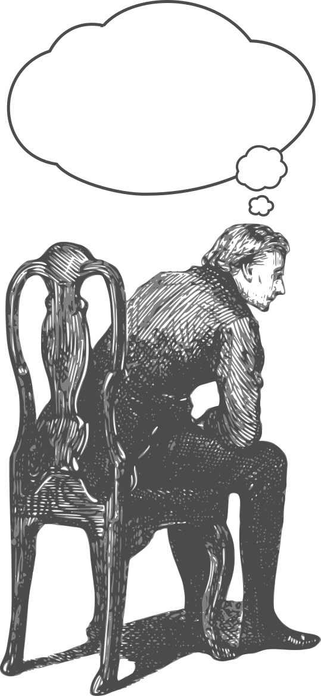
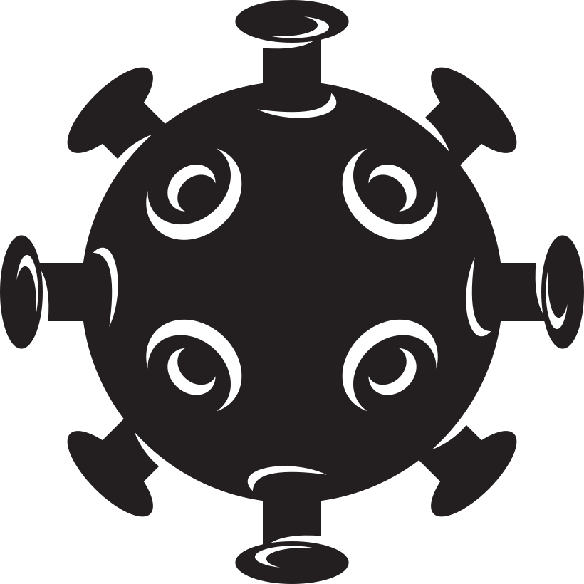

Gli umani provano una
grande avversione per l'incertezza; è
proprio questo il motivo che porta alla nascita di molte teorie, ma
anche alla ricerca di parecchie cure nell'età moderna.
Avere una spiegazione completamente sbagliata è
molto più rassicurante di non averne una.
Infatti, nel passato, se ti ammalavi, significava che
avevi commesso un peccato
o eri stato nei posti sbagliati.
Anche nell'età moderna abbiamo questo problema,
principalmente per le malattie in fase di ricerca. Invece di aspettare
una conclusione si danno scuse, per esempio:
"aveva uno stile di vita sbagliato".
La teoria dei miasmi
Le radici
Tutto partì dall'idea di
Ippocrate e Galeno. Entrambi credevano che la salute
dipendesse dall'armonia interna
di quattro liquidi fondamentali:
Sangue
Flemma
Bile Gialla
Bile Nera
Il miasma era visto come una sorta di
"nebbia velenosa"
emanata da paludi, fognature o corpi in decomposizione, capace di
penetrare nel corpo degli uomini e infettarli.
Più forte era l'odore,
più potente
era considerata la malattia. Questo portò all'uso di
profumi e sostanze aromatiche come un modo per respingere i
miasmi.
Questo era anche un motivo per cui la
maschera del medico della peste
era riempita, all'interno del becco, con erbe aromatiche e
spezie, per filtrare l'aria infetta.
Perché la teoria sembrava funzionare?
La teoria miasmatica sembrava funzionare perché si basava su
un'osservazione sperimentale corretta, pur traendo
una conclusione errata:
L'osservazione
Nelle zone sporche, la gente si ammalava di più.
L'errore logico
Si pensava che la causa fosse il miasma, mentre la
vera causa
erano i microrganismi che si moltiplicavano in quegli ambienti.
L'intervento
Le autorità iniziarono a pulire le fognature e drenare le
paludi, il che eliminò involontariamente molti
microbi, facendo ammalare meno gente in futuro.
Il castigo divino nel Medioevo
La malattia come espiazione
Nel Medioevo la scienza era decisamente indietro a quella del giorno
d'oggi; essa non poteva spiegare l'origine dell'epidemia.
Essendo molto religiosi gli uomini dell'epoca, diedero come
motivazione l'ira di Dio
per i peccati commessi dall'umanità.
L'epidemia era vista come un messaggio da Dio per gli
uomini; infatti essi trattarono questa "punizione" molto
seriamente (anche se, come si scoprirà dopo nella sezione della
virologia moderna, questa
non fu
la vera origine di queste malattie).
Il movimento dei flagellanti
Un effetto di questa credenza fu il
movimento dei flagellanti, persone che
attraversavano la città colpendosi a sangue con
fruste e catene per espiare i loro peccati.
Questo però
aiutò solo la peste nera a diffondersi,
poiché i raduni di massa, specialmente di persone ferite,
erano un paradiso per i microbi.
Ovviamente non finisce qui, i flagellanti viaggiavano di
città in città, causando la
diffusione della peste nera.
Il legame con la teoria dei miasmi
Si credeva anche che fosse Dio a corrompere l'aria,
creando il miasma, per punire gli uomini. Questo causò
l'inizio della
caccia ai peccatori.
Questi peccatori solitamente erano persone
"diverse", come le
minoranze
e quelle che soffrivano di disabilità.
Eliminare questi "peccatori" era visto come un vero e
proprio
protocollo di purificazione
per l'aria contagiata dai miasmi.
I motivi del pensiero magico
Il bisogno di un perché

Gli esseri umani, come menzionato in precedenza,
odiano l'incertezza; questo fenomeno
psicologico è un tratto di sopravvivenza presente in
tutti gli umani. Per i nostri antenati non sapere cosa c'era
dentro un cespuglio poteva fare la
differenza tra la vita e la morte.
Inoltre, una spiegazione dà l'illusione di avere controllo
sulla situazione, per esempio: se la causa della peste era il
peccato, allora bastava non commettere peccati per
evitarla.
Dare un volto al nemico
Questo fenomeno è correlato al bisogno di un perché;
infatti dare la colpa a qualcuno, anche senza prove,
risolve in parte l'incertezza, visto che in quel momento si ha un
motivo concreto.
Il cervello umano è bravo ad affrontare
minacce percepibili, ma contro gli
invisibili batteri
inizia ad avere difficoltà.
La comodità del pensiero magico
La scienza è lenta e complessa, mentre il
pensiero magico è immediato. Il cervello
umano preferisce svolgere il lavoro più facile; in
questo caso inventarsi teorie risulta molto più facile che
condurre una lunga ricerca scientifica.
Virologia moderna
La teoria dei germi
La fine della teoria dei miasmi fu posta da
Louis Pasteur e Robert Koch. Essi dimostrarono che le
malattie non erano causate da miasmi, ma da
certi microrganismi.
Questa fu una scoperta importantissima, distruggendo
un'idea che esisteva da oltre 2000 anni.
Cosa sono questi microrganismi?

Questi microrganismi si chiamano virus, scoperti da
Ivanovskij nel 1892. Essi sono molto più piccoli dei
batteri. I virus non furono scoperti fino alla fine
dell'Ottocento. Essi
non sono una cellula completa, ma una
piccola capsula di materiale genetico.
L'obbiettivo di questi virus è di
moltiplicarsi, solitamente utilizzando una
cellula ospite
che, successivamente, esplode e rilascia tutte le
particelle di virus create, infettando le cellule vicine e
continuando il suo processo.
Come combatte la virologia moderna?
A questo punto, sappiamo che i miasmi non sono il motivo per
cui ci ammaliamo, per questo gli scienziati si stanno concentrando sui
virus. Grazie a questo, sono nate diverse
armi per combattere
contro i virus:
Vaccini
addestrano il sistema immunitario a riconoscere il virus
prima che attacchi.
Antivirali
farmaci che bloccano la replicazione del virus dentro le
cellule.
Igiene e prevenzione
lavaggio delle mani e uso di mascherine.
I vaccini contro il COVID-19
La tecnologia mRNA
A differenza dei vaccini tradizionali, i vaccini per il COVID-19
utilizzano la tecnologia a mRNA.
Come funzionano
Invece di inserire il virus indebolito nel corpo come tutti
gli altri vaccini, forniscono alle cellule delle
istruzioni genetiche
per costruire una piccola parte del virus.
La risposta
Il sistema immunitario riconosce questa proteina come
estranea e la combatte,
imparando come difendersi
da essa; di conseguenza, saprà come combatterla nel caso in
cui il corpo venisse infettato veramente dal COVID-19.
Differenza con il passato
Nel Medioevo si cercava di purificare l'aria o
espiare i peccati, oggi invece siamo
più realistici
e curiamo i virus a
livello molecolare. Usiamo tecniche di prevenzione e
cure studiate da scienziati invece di teorie con
prove fuorvianti
o addirittura mancanti di prove.
Fake news
Che cosa sono le fake news?
Le fake news sono delle informazioni decisamente
errate, inventate o distorte che si possono trovare molto facilmente
online, ma anche nella vita di tutti i giorni.
Queste notizie vengono create principalmente con l'intento di
ottenere fama, a volte però anche per provare a
scatenare confusione e caos, specialmente per gli argomenti
prevalenti.
Gli untori e le fake news
Peste
Non sapendo che la malattia provenisse dal batterio
Yersinia pestis, la gente inventò gli
untori, persone che spalmavano unguenti venefici.
Era una fake news creata per dare un motivo alla misteriosa
origine della peste.
COVID-19
Anche se noi abbiamo la scienza, le fake news vengono usate come uno
strumento di controllo. Dove vengono date
notizie speranzose illogiche
per influenzare i pensieri altrui.
E gli untori moderni?
Come molte altre cose del Medioevo, gli untori non ci hanno
lasciati, si sono solo evoluti.
Invece di avere untori di unguenti, abbiamo persone sulla
televisione a dirci con simulazioni fuorvianti che la
pandemia sarebbe finita in pochissimo tempo, questo per far sentire
alla popolazione generale
quello che si vuole sentirsi dire
e di conseguenza influenzarla.
Il vero motivo delle fake news
Soldi
Più fama e caos ottiene un articolo, quindi
più click ottiene, più soldi fa il
distributore della fake news tramite la
pubblicità
che mette sul sito dove si trova la notizia.
Le differenze tra la peste nera e il COVID-19
Causa e conoscenza:
Era causata dal batterio Yersinia pestis, ma
all'epoca la sua origine era
sconosciuta
alla scienza medievale.
Teorie e credenze:
Si pensava che fosse scatenata dai miasmi o inviata dal
potere divino
per punire i peccati dell'umanità.
Reazioni e rimedi:
La popolazione cercava la salvezza attraverso l'espiazione
o cercava capri espiatori come gli untori,
finendo per diffondere di più il contagio.
Causa e conoscenza:
È causato da un virus, un microrganismo
studiato dalla
virologia moderna
e combattuto a livello molecolare.
Teorie e credenze:
Nonostante le numerose informazioni portate dalla scienza,
è sempre soggetto a fake news,
specialmente quelle diffuse
digitalmente.
Reazioni e rimedi:
Viene affrontato con tecnologie avanzate come i
vaccini a mRNA, farmaci antivirali e misure di igiene e
prevenzione.